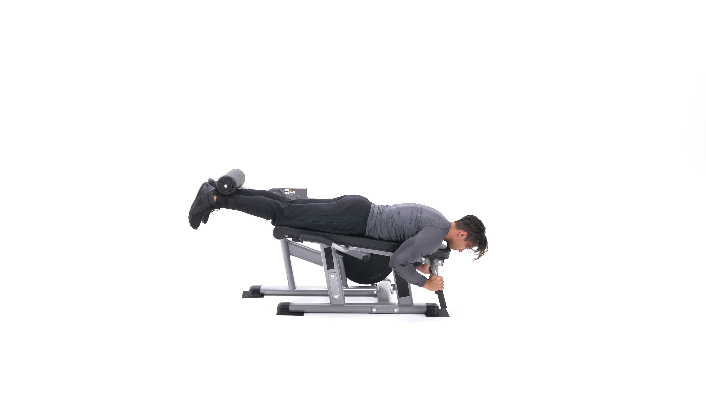
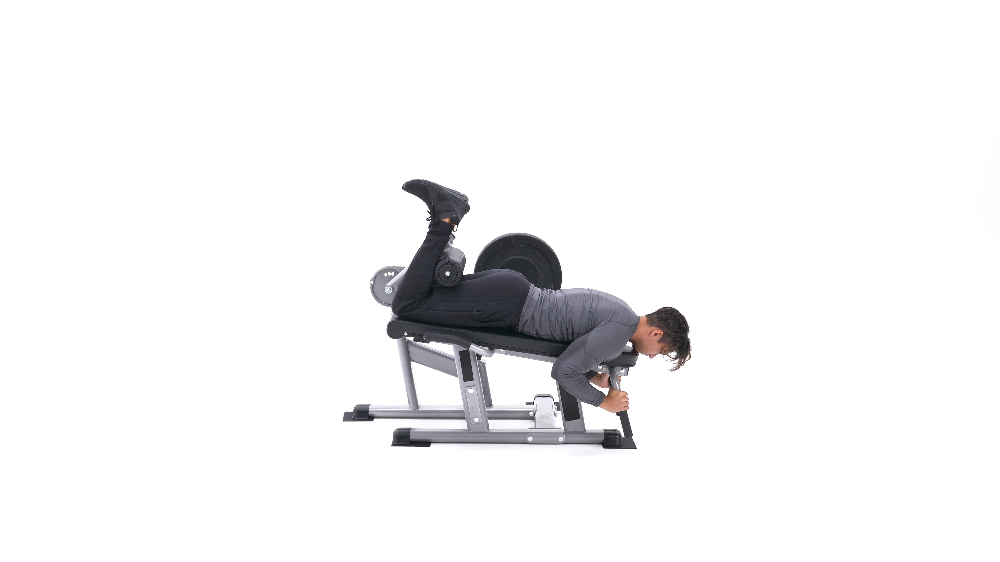

The lying leg curl is a popular machine-based exercise for the legs, particularly the hamstrings. It is similar to the seated leg curl, but the open hip angle in the lying leg curl may incorporate more glute and calf activation. It is usually performed for moderate to high reps, such as 8-12 reps per set or more, as part of a leg pre-exhaust or as a muscle-building movement for lower-body training.
1. Adjust the machine lever to fit your height and lie face down on the leg curl machine with the pad of the lever on the back of your legs (just a few inches under the calves). Tip: Preferably use a leg curl machine that is angled as opposed to flat since an angled position is more favorable for hamstrings recruitment.
2. Keeping the torso flat on the bench, ensure your legs are fully stretched and grab the side handles of the machine. Position your toes straight (or you can also use any of the other two stances described on the foot positioning section). This will be your starting position.
3. As you exhale, curl your legs up as far as possible without lifting the upper legs from the pad. Once you hit the fully contracted position, hold it for a second.
4. As you inhale, bring the legs back to the initial position. Repeat for the recommended amount of repetitions.
Caution: Do not ever use so much weight on the exercise that you start using swinging and jerking as you can risk both lower back injury and also a hamstring injury.
Variations: Since you have three foot positions you have in reality three exercises. The movement can also be performed with a dumbbell held in between your feet (a partner needs to place it properly). This latter exercise though is only suitable for advanced trainees. Finally, it is also possible to just use one leg at a time for better isolation.
1. Builds size and strength in the hamstrings.
2. Also works the glutes and calves.
3. Great accessory movement for a stronger squat and deadlift.
4. Many lifters say they "feel" this movement more effectively than seated leg curls
This is the Hamstring Curl in the down position.
This is the Hamstring Curl in the up position.
